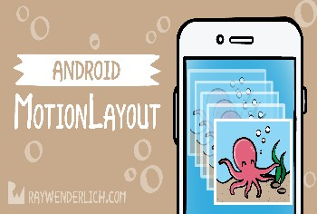

Android MotionLayout Tutorial

MotionLayout is a layout class that extends from ConstraintLayout. MotionLayout has all the features of ConstraintLayout. On top of that, it also provides the ability to easily animate changes to your UI, without needing to know much about UI interactions and the Android Animation Frameworks.
Add MotionLayout as a Gradle Dependency
In this section, we are going to learn how to add various build types in Android.
By default, whenever you create any project, then Android Studio will create two build types for the project i.e. "debug" and "release". But in order to add more build types, you need to add them to your module-level build.gradle file and under the buildTypes block. The following is an example of the same:
Now, if you open the Build Variants option in the Android Studio, then you will find 4 build variants i.e. debug, release, minifiedDebug, and newBuildType. You can choose any of these for your build.
In this article, we will be looking at implementing a simple swipe action on a RecyclerView and how we can achieve the scaling animation with MotionLayout.
While developing an Android application, we generally need various types of APKs or you can say different versions of APK during the development and release phase. For example, you may need one debug APK without having proguard or one debug APK with proguard or you may need one APK for your free users and one APK for your paid users or you may need one APK for Android version 6 and above and one APK for Android version below 6 and there are many other possibilities. But the question is, how you are going to create these many versions of your App. Are you going to have different projects for these versions or just one project is enough? Because the code is going to remain almost the same and just some APIs or some build configurations are going to change? So, how to achieve this? This can be achieved by using Build Variants i.e. the topic of this blog.